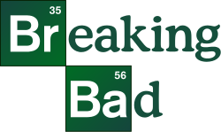

Diziler
Bana Göre En İyi Diziler
Buradaki tüm diziler kendi beğenilerim çerçevesinde listelenmiştir.
Doctor Who

Doctor Who, 1963 yılından beri yayınlanan BBC yapımı Birleşik Krallık bilimkurgu televizyon dizisi. Dizi; Doktor olarak bilinen, zamanda yolculuk yapan insansı dünya dışı yaratık olan bir Zaman Lordu'nun maceralarını anlatmaktadır. Doktor, dışarıdan 1950'lerden kalma bir polis kulübesi gibi görünen TARDIS adındaki bilince sahip ve zamanda yolculuk edebilen bir uzay gemisi ile evreni araştırır. Yol arkadaşları ile beraber uzay ve zamanı keşfeder, sorunları çözer, yaratıklarla yüzleşir ve tarihe yapılan müdahalelere engel olur.
Benim bu diziyi sevme nedenim başrol olan "Doctor" karakterinin çok güzel yansıtılmış olması. Başlarda aklı havada, yerinde duramayan, meraklı bir karakter gibi dururken ciddi durumlarda ne kadar zeki, aklı başında ve gizem dolu olduğunu görüyoruz. Geçmişinde gizli olan gizemler ise sürekli merak ettirerek diziye devam ettiriyor.
Breaking Bad

Breaking Bad, Vince Gilligan tarafından tasarlanmış ABD drama televizyon dizisidir. 50 yaşında lisede kimya öğretmeni olan Walter White (Bryan Cranston), bir oto yıkamada ek iş yapmaktadır ancak bir süre sonra ileri derecede akciğer kanseri olduğunu öğrenir. Dizide Walter White ailesine para bırakabilmek için uyuşturcu kullanan muhitleri bilen eski öğrencisi Jesse Pinkman (Aaron Paul) ile birlikte metamfetamin üretmeye başlar.
Benim bu diziyi sevme nedenim senaryo kalitesi. Tutarlılık, hikayenin ilerleyişi ve asıl önemli ve bu kadar mükemmel kılan karakter gelişimi dizidde harika işlenmiş. Mükemmel yazılmış karakterlerle mükemmel hikaye akışı ve mükemmel oyunculuk eklenince bu kadar mükemmel bir dizi ortaya çıkması kaçılımaz.
Friends

Friends, David Crane ve Marta Kauffman tarafından yaratılmış Amerikan yapımı sitcom türünde bir dizidir. 22 Eylül 1994 ile 6 Mayıs 2004 tarihleri arasında NBC'de yayınlanan dizi, on sezon sürdü. Manhattan'da yaşayan bir grup arkadaşın hayatı üzerinde dönen dizi, Warner Bros. Television şirketine bağlı Bright/Kauffman/Crane Productions yapımıdır. Yönetici yapımcıları Kevin S. Bright, Marta Kauffman ve David Crane'dir.
Benim bu diziyi sevme nedenim yine çok güzel olan karakterler. 6 kişilik bir arkadaş grubunu konu olan bu dizide tüm karakterler birbirinden farklı ve hepsini sevmek için başka sebepler sunuyor. Espirileri, oyunculukları ile izlemesinin çok zevkli olmasının yanı sıra benim için stres atma yöntemlerinden birisi. Sıkıldıkça, stresli oldukça açıp 2-3 bölüm izleyip hemen kendime gelirim.
Game of Thrones

Game of Thrones (Türkçe: Taht Oyunları), David Benioff ve D. B. Weiss tarafından yaratılan ve HBO'da yayımlanan Amerikan fantastik televizyon dizisidir. George R. R. Martin'in epik fantezi serisi Buz ve Ateşin Şarkısı'ndan uyarlanmış olan dizi, adını serinin ilk kitabından almaktadır. İngiltere, Kanada, Hırvatistan, İzlanda, Malta, Fas ve İspanya'da çekilmiştir. İlk bölümü 17 Nisan 2011'de HBO üzerinden yayımlanmış ve sekiz sezon süren yetmiş üç bölümün ardından 19 Mayıs 2019'da sona ermiştir.
Benim bu diziyi sevme sebebim G.R.R. Martin'in mükemmel diyalog ve olay yazma becerisinin HBO'nun büyük bütçesi ile birleşince bir şölen sunuyor olması. Son 2 sezon batırmalarına rağmen kesinlikle kalite olarak başı çeken dizilerden. Cgi konusunda ve oyuncu kalitesinde bir numara olabilecek bir dizi.
House of the Dragon
House of the Dragon (Türkçe: Ejderha Hanedanı), George R. R. Martin ve Ryan Condal tarafından HBO için yaratılan Amerikan fantastik drama dizisidir. Martin'in Ateş ve Kan kitabına dayanan dizi, Ejderhaların Dansı adı verilen iç savașa giden süreci ve bu iç savaşı ele alıyor.
Bu diziyi sevme sebebim Game of Thrones'da iyi yaptıkları her şeyi alıp, yine Game of Thrones'un açmış olduğu kapılar sayesinde gerek bütçe, gerek oyuncular açısından sağladığı büyük avantajı da kullanarak ortaya çok güzel bir eser çıkarmış olmaları. Daha henüz 1 sezonu da olsa kesinlikle devamı konusunda sabırsızlandırıyor.